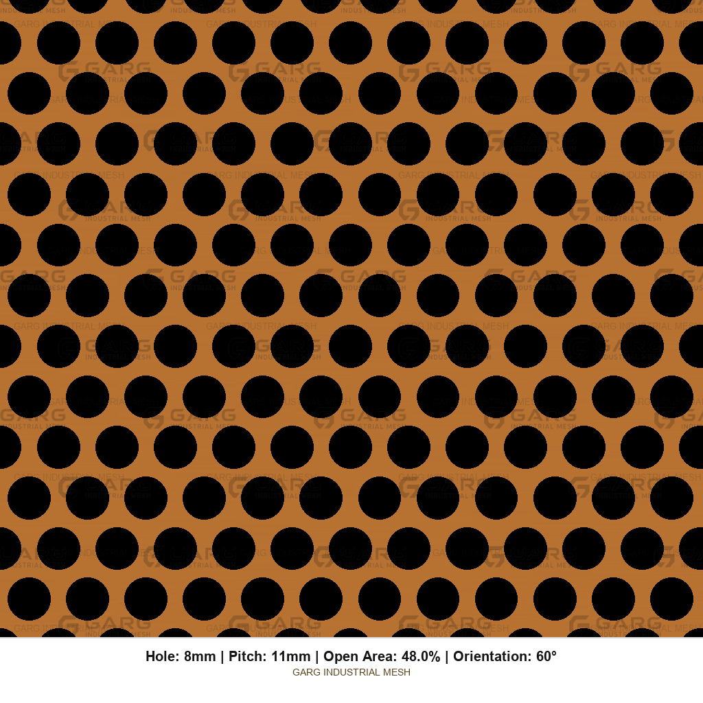
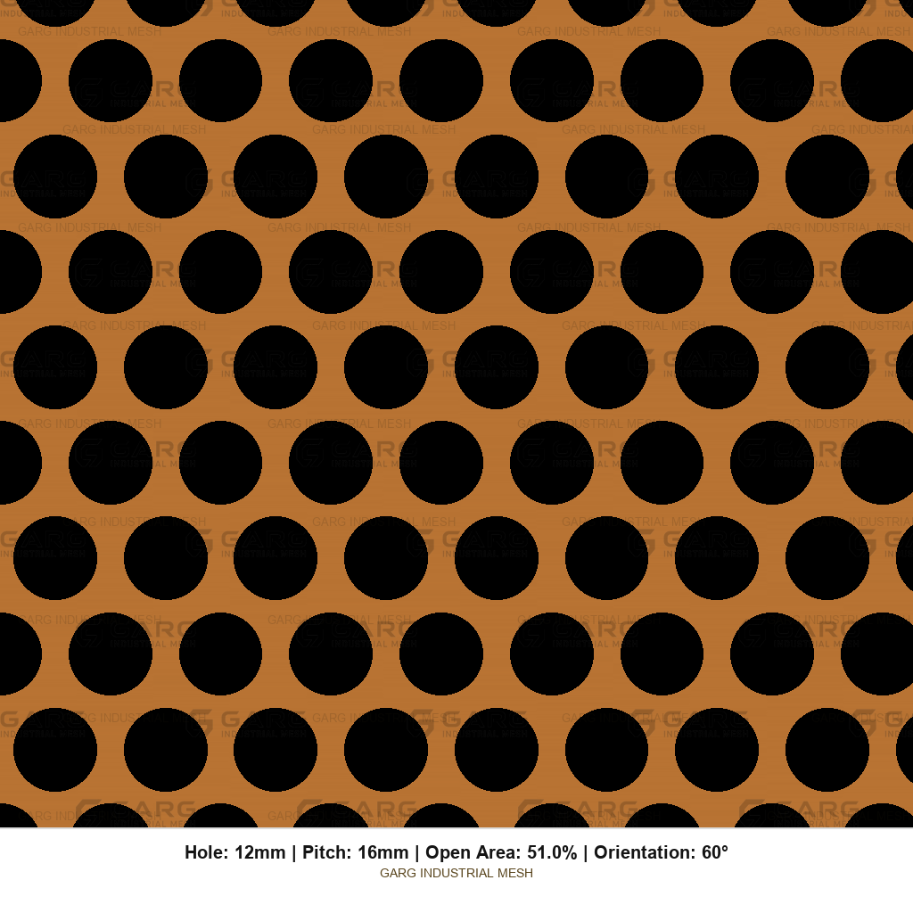

Thickness vs purpose
Brass Mesh Sheet Thickness by Application
Thickness is money, stiffness, and punchability. Too thin and the decorative brass screen oil-cans. Too thick and your small holes stop being punchable. Bands below are shop guidance — confirm against span, load, temper, and hole size.
Hard rule of thumb first
For conventional punching: hole diameter (or minimum hole opening) ≥ material thickness. Below 1:1 is a process discussion with GARG — not a silent assumption on the RFQ.
Checking hole size against thickness before the aesthetic render leaves the office. A 1.0 mm hole in 2.0 mm brass is a manufacturing problem.
Guidance bands by application
| Application | Typical thickness band | What drives the number | Confirm on order |
|---|---|---|---|
| Decorative screens / architectural cladding | ~0.5–1.5 mm common; heavier for long spans | Visual flatness, framing, colour/finish | Span, fixings, lacquer plan |
| Elevator / cabin interior panels | ~0.8–1.5 mm typical | Flatness, abuse resistance, fastener lands | Temper (often H01/H02), blank edge for frame |
| Speaker grilles / lighting faces | ~0.5–1.2 mm common | OA%, formability, visual density | Hole ≥ thickness; finish |
| Brass ventilation grilles / retail displays | ~0.5–2.0 mm | OA%, stiffness, mounting | OA% on perforated field vs full panel |
| Furniture / hardware / signage | ~0.6–2.0 mm | Edge quality, forming, look | Burr side, lacquer |
| Marine decorative accents | ~0.8–2.0 mm | Exposure, alloy (often Muntz / named), finish | Alloy + corrosion/finish plan — not EMI duty |
State thickness in millimetres as a decimal — not only “gauge.” 1.2 mm is unambiguous.
Thickness vs open area vs stiffness
Raise open area and the panel softens fast. Raise thickness and you buy stiffness back — until holes get smaller than the sheet is thick. For long architectural spans: moderate OA%, slightly heavier sheet, sensible blank edges, harder temper.
Weight (quick reality check)
Solid brass density is typically about 8.4–8.5 g/cm³ (alloy-dependent; cartridge brass often ~8.53). Perforated weight ≈ solid weight × (1 − OA%/100) over the perforated field, then add solid blank-edge strips.
RFQ examples
How hole size reads at different scales



